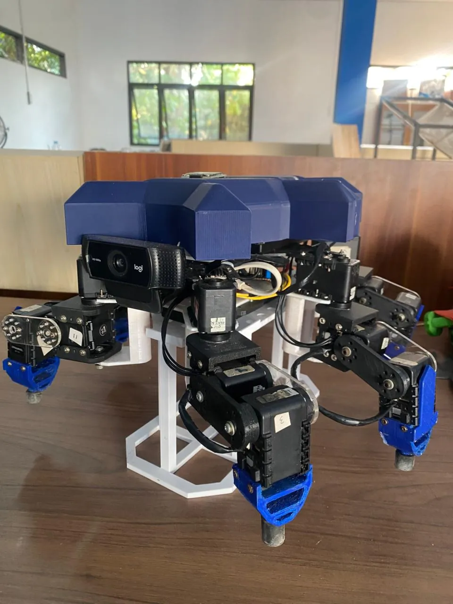
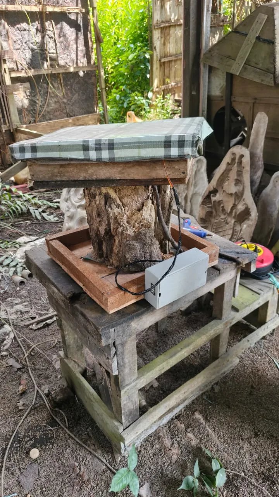
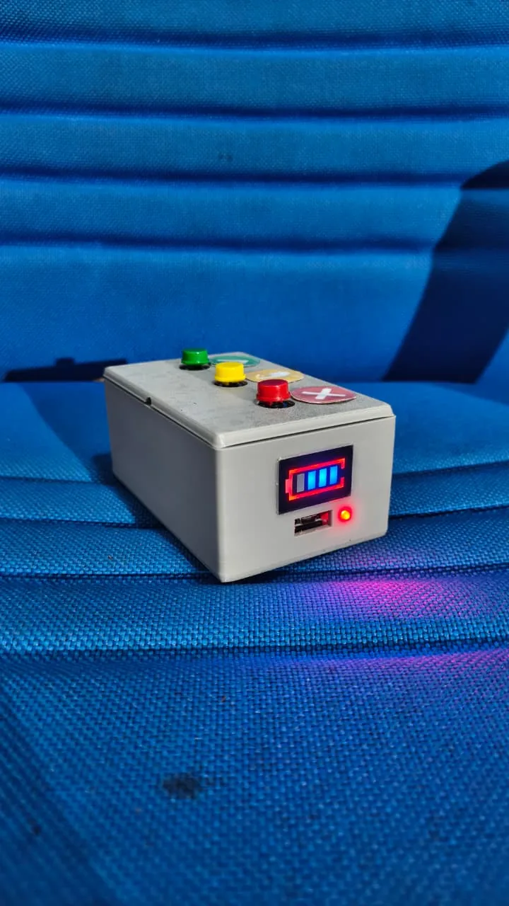
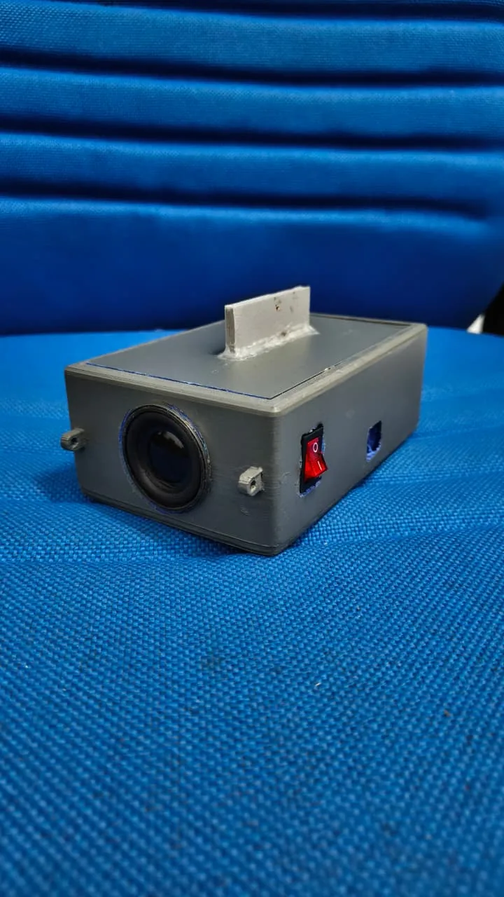
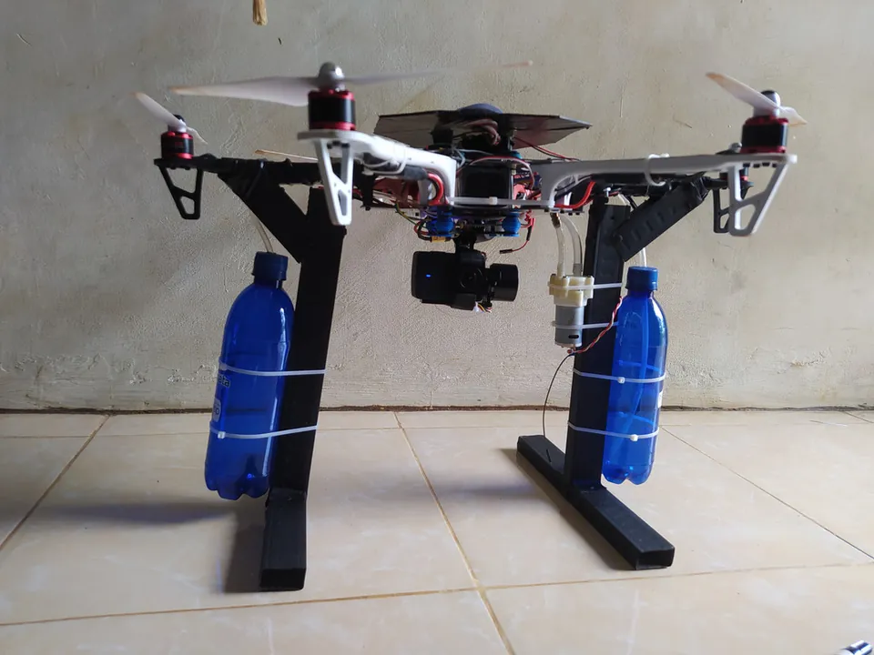
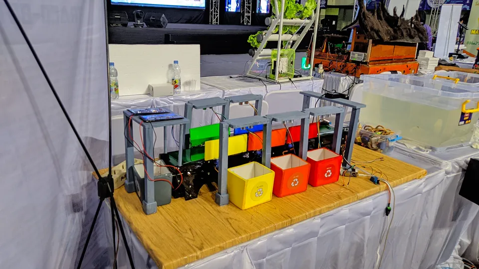
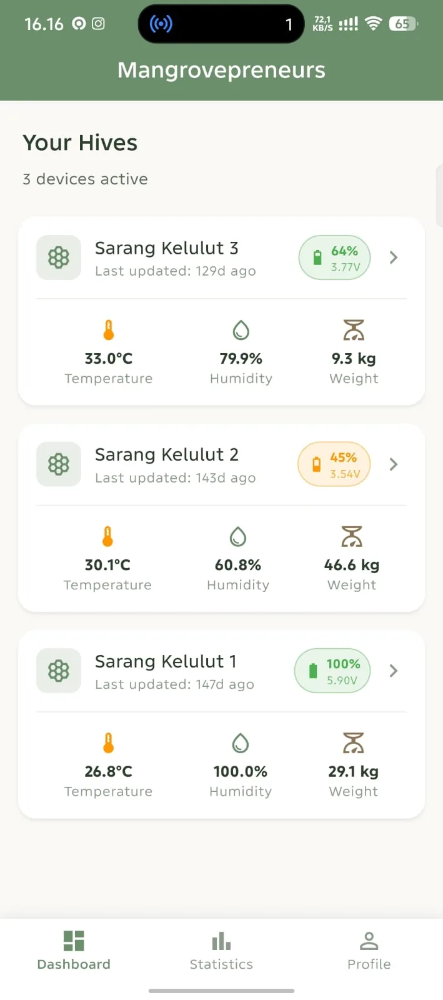
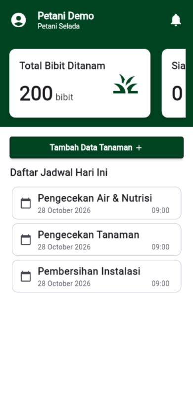

Robotika
Wasaka Hexapod (Hexaka V3)
Robot berkaki enam yang menjaga keseimbangan dan membaca lintasan melalui kamera.
Lihat proyek & previewArsip karya
Robot, perangkat IoT, aplikasi web, dan aplikasi mobile. Setiap proyek memiliki penjelasan dan preview di dalam portofolio ini.

Robot berkaki enam yang menjaga keseimbangan dan membaca lintasan melalui kamera.
Lihat proyek & preview
Membantu peternak memantau kondisi sarang kelulut dan target panen melalui ponsel.
Lihat proyek & preview
Tiga tombol bersuara untuk membantu pengguna menyampaikan “mau”, “iya”, dan “tidak”.
Lihat proyek & preview
Mengenali nominal uang melalui sensor warna lalu menyebutkannya lewat speaker.
Lihat proyek & preview
Menghubungkan sensor tanah, pemantauan lahan, dan drone untuk kebutuhan perkebunan.
Lihat proyek & preview
Konveyor yang mengenali kategori sampah melalui kamera dan memilahnya secara otomatis.
Lihat proyek & preview
Layanan cetak 3D dan produk robotika dengan konfigurator produk yang bisa digunakan di browser.
Lihat proyek & preview
Merapikan pengajuan cuti pegawai, persetujuan berjenjang, dan penerbitan surat dalam satu sistem.
Lihat proyek & preview
Membantu pengunjung menemukan wisata Kalimantan Selatan dan memesan tiket kunjungan.
Lihat proyek & preview
Simulasi pengelolaan server, penyimpanan, dan tagihan langganan cloud dalam satu dashboard.
Lihat proyek & preview
Membantu cosplayer menemukan kostum sewaan dan memeriksa tanggal ketersediaannya.
Lihat proyek & preview
Menampilkan suhu, kelembapan, dan berat sarang kelulut beserta notifikasi di ponsel.
Lihat proyek & preview
Menghubungkan pekerjaan kebun hidroponik, pencatatan panen, dan pengiriman hasilnya.
Lihat proyek & preview